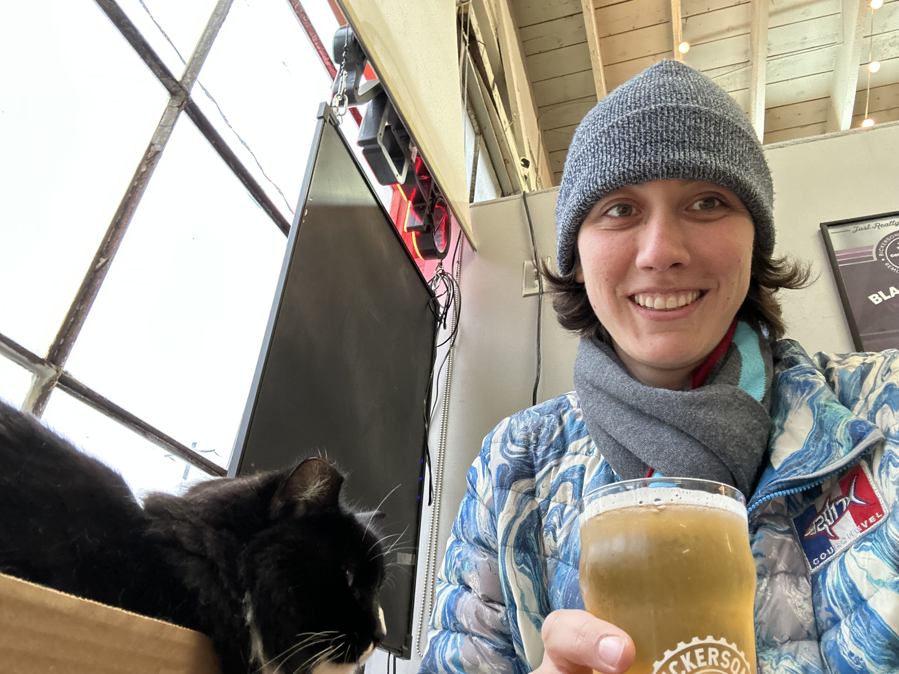

Brewery Tour
Overview
Enjoy tasting various craft beers in Brooklyn.
Summary
- Location: DUMBO-ish
- Time: Highly variable
- Cost: $10ish per beer
- Vibe: Flexible, adventurous flavors, relaxed atmospheres
Details
I had such a great time trying funky beer flavors last time I was in Brooklyn. We could enjoy some great beer together! Here are some brewery options:
- Talea Beer Co. is a woman-owned brewery that had really fun flavors like everything bagel and Lemon Basil. We went to the Cobble Hill taproom and then walked to Evil Twin Brewing, but they have several locations if we end up not wanting to go down to Brooklyn.
- Evil Twin Brewing is in Dumbo. Its run by a guy whose twin runs a brewery in Copenhagen. They had really fun rich flavors like strawberry shortcake and guava fizz. Truly some of the best beers I've ever had were here.
- I've never been to Randolph Beer but it looks like they just opened their rooftop and they are walkable from DUMBO.
We could walk around, grab a drink at each and maybe find a restaurant for a meal along the way.
Back to date list Retake date quiz